教材第 1 页
查看原书页面距今约二三百万年，人类形成。从早期人类的出现到15世纪末期，人类社会大体经历了原始社会、奴隶社会和封建社会。人类最早的文明是在适合农业耕作的大河流域产生的，亚非地区的尼罗河流域、两河流域、印度河流域和黄河流域、长江流域是人类文明的重要发祥地。古代亚非地区的文明古国创造了辉煌灿烂的文明成果，如古代埃及的象形文字和金字塔，古代两河流域的楔形文字和《汉谟拉比法典》，中国的甲骨文和青铜器，古代印度的梵文和佛教等，为世界文明的发展作出了杰出的贡献。
UNIT 01
本单元包含 3 课，正文与课后活动按教材原顺序编排，并保留对应全部原书页面。
单元导语
距今约二三百万年，人类形成。从早期人类的出现到15世纪末期，人类社会大体经历了原始社会、奴隶社会和封建社会。人类最早的文明是在适合农业耕作的大河流域产生的，亚非地区的尼罗河流域、两河流域、印度河流域和黄河流域、长江流域是人类文明的重要发祥地。古代亚非地区的文明古国创造了辉煌灿烂的文明成果，如古代埃及的象形文字和金字塔，古代两河流域的楔形文字和《汉谟拉比法典》，中国的甲骨文和青铜器，古代印度的梵文和佛教等，为世界文明的发展作出了杰出的贡献。
第 1 课
古埃及文明是世界上最早的文明之一，尼罗河是孕育古埃及文明的摇篮。为什么说金字塔是古埃及文明的象征？古埃及的法老与金字塔有什么关系？
古埃及位于非洲东北角，世界上最长的河流尼罗河贯穿埃及南北。每年尼罗河定期泛滥，当洪水退去后，两岸留下肥沃的黑色淤泥，非常有利于农业生产。因此，古埃及被认为是“尼罗河的赠礼”。约从公元前3500年开始，在尼罗河下游陆续出现了若干个小国家。公元前3100年左右，古埃及初步实现了统一。在法老图特摩斯三世统治时期，古埃及成为强大的军事帝国，版图向北延伸至叙利亚①与小亚细亚交界处，以及幼发拉底河上游，向南扩展到尼罗河“第四瀑布”②。此后，古埃及又几度分裂，并不断遭到外族入侵。公元前525年，波斯
古代埃及示意图
①古代叙利亚大体包括今叙利亚、黎巴嫩、巴勒斯坦、以色列和约旦等地。②尼罗河“第四瀑布”，在今苏丹共和国境内。
帝国吞并古埃及；后来，亚历山大帝国和罗马帝国先后占领古埃及。古埃及文明没有延续下去。
古埃及墓穴壁画，描绘了古埃及人的社会经济生活
古埃及的科学和文化取得了很高的成就，其中天文学、数学和医学成就最为突出。太阳历是古埃及天文学的突出成就之一。古埃及的象形文字是世界上最早的文字之一。
古埃及象形文字铭文
尼罗河与古埃及科学文化的发展有什么关系？
古埃及人发现，每年7月，当太阳和天狼星在地平线上同时升起时，尼罗河就会开始涨水。他们据此制定了每年365天的太阳历。由于需要测量尼罗河的水位，丈量洪水退去后的两岸土地，再加上建筑等方面的计算需要，古埃及人发展了数学。古埃及人将人的遗体制作成木乃伊，增长了解剖知识，从而促进了医学的发展。古埃及象形文字在19世纪被释读，为古埃及研究开启了一个新纪元。古埃及的雕刻和绘画主要以国王和贵族为对象，人物表情庄重、严肃。
古埃及石雕人物像
古埃及法老为自己修建呈角锥体状的陵墓，它每个侧面都形似汉字“金”，因此，中国人称之为“金字塔”。金字塔是古埃及文明的象征，反映了古埃及社会经济发展的较高水平，是古埃及人智慧的结晶。
金字塔
古埃及最大的金字塔是胡夫金字塔，建于约公元前2600年，原塔高约146.5米，基底每边长230多米，用石200多万块，平均每块重2.5吨左右。石块之间严丝合缝，连刀片都插不进去。在胡夫金字塔旁的哈夫拉金字塔前，还有一座狮身人面像，用一整块巨石雕成，高20余米，长50余米。金字塔与狮身人面像相互烘托，构成宏大的历史场景。
狮身人面像
金字塔的修建，反映了古埃及国王的无限权力。古埃及的国王称“法老”。法老作为全国最高的统治者，集军、政、财、神等大权于一身。在宗教上，法老被认为是“神之子”，具有无上的权威。大臣见国王时，要匍匐在地上，吻国王脚下的土地。国王发起怒来，还经常亲自用王杖责打大臣。
随着社会矛盾的激化，王权受到多方面的挑战。胡夫金字塔之后，金字塔越修越小，反映了王权的逐渐衰落。
古埃及文明延续发展至今，文明进程历经曲折但未间断 ( ) 古埃及在科学、文化领域取得很高的成就 ( ) 古埃及国王给自己的陵墓取名“金字塔”，象征着无限的权力 ( )
2. 请查找资料，读读关于金字塔建造的故事，你认为哪种建造方法比较合理？
人类的形成和原始社会
距今约二三百万年，人类形成。有了人类，就有了人类社会的历史。人类最初经历的是原始社会。随着生产力的发展和社会的进步，出现了氏族。最初人们生活在母系氏族社会，那时候财产公有，生产和分配都以集体为基础。随着农业和畜牧业的发展，以及手工业的进步，男子在经济活动中开始占主导地位。父系氏族社会逐渐取代母系氏族社会。在父系氏族社会后期，生产力进一步提高，出现了剩余产品和家庭私有财产，私有制和奴隶制出现，原始社会开始解体，人类逐步进入阶级社会。
第 2 课
古代西亚的两河流域是人类最早的文明发祥地之一。古巴比伦王国是古代两河流域文明发展的一个高峰。有人说，《汉谟拉比法典》是两河流域文明留给人类的宝贵文化遗产。为什么这样说呢？
“两河”，是指西亚的幼发拉底河与底格里斯河。两河流域，又称“美索不达米亚”，意即“两河之间的地方”，大体上是以今天伊拉克首都巴格达为中心的狭长地带。约从公元前3500年起，两河流域南部逐渐产生了一些以城市为中心的小国，小
古代两河流域示意图（约公元前3500—前539）
国之间混战不止。
大约在公元前24世纪，两河流域实现了初步统一。此后，两河流域屡遭外族入侵和内部战乱。
当今世界上普遍采用什么进位制？
两河流域的苏美尔人很早就发明了文字。他们通常用削成尖头的芦秆或木棒做笔，在未干的软泥版上压刻出符号。这些符号的线条由粗到细，很像木楔，所以由这种笔画构成的文字被称为“楔形文字”。苏美尔人还根据月亮的盈亏变化制定了阴历，一年354天，并设置闰月来调整阴历和阳历之间的天数差距。计数法中的60进位制也是两河流域人发明的。
古巴比伦王国原是幼发拉底河中游的一个小国。公元前18世纪，第六代国王汉谟拉比在位时，对外采取各个击破的策略，完成了两河流域中下游地区的统一事业，建立了统一、强大的奴隶制国家。汉谟拉比实行君主专制制度，加强中央集权，还制定了一部较为系统和完整的法典。他在位时是古巴比伦王国最强盛的时期。
楔形文字
汉谟拉比几乎集中了国家的全部权力，亲自掌管司法和行政部门，直接掌握军队。他极力神化自己，自称“众神之王”。汉谟拉比还大兴水利，他在位的好几个年份都作为“开凿河渠之年”而载入史册。汉谟拉比死后，国内各种矛盾激化，许多地方发生暴动，国力逐渐衰落。公元前1595年，古巴比伦王国被外族灭亡。
《汉谟拉比法典》是迄今已知世界上第一部较为完整的成文法典。法典刻在一块黑色石柱上，
①古巴比伦王国，公元前19世纪建立，公元前16世纪灭亡。
除前言外，正文共有282条，内容十分广泛，从中可以清晰地了解古巴比伦社会。
从法典中可知，古巴比伦分为拥有公民权的自由民、无公民权的自由民和奴隶三个严格的社会等级。奴隶制度在古巴比伦相当发达。战俘是奴隶的主要来源，也有买卖奴隶的现象。家庭奴隶制是古巴比伦的一大特征，男性家长对奴隶有生杀予夺之权，对妻子儿女有绝对权威，在欠债时甚至可以将妻儿送去抵债。同时，法典中有许多关于租赁、雇佣、交换、借贷等方面的规定，说明商品经济在古巴比伦比较活跃。《汉谟拉比法典》是古巴比伦王国留给人类的宝贵文化遗产，表明人类社会的法制传统源远流长。
《汉谟拉比法典》石柱局部图
《汉谟拉比法典》严格保护奴隶主的利益，规定：拐带奴隶、帮助奴隶逃跑或窝藏奴隶者，都要被处以死刑。奴隶打自由民的嘴巴或不承认自己的主人，要被处以割耳之刑。法典规定：拥有公民权的自由民的地位要高于无公民权的自由民。拥有公民权的自由民伤害同等地位的自由民的眼睛，必须遭受同样损害；但如果损害无公民权的自由民的眼睛，则只需赔偿少量的钱财。
《汉谟拉比法典》石柱，现藏于巴黎卢浮宫博物馆
读材料，想问题。《汉谟拉比法典》规定：倘奴隶告其主人云：“你非吾之主人”，则此主人应证实其为自己的奴隶，而后其主人得割其耳。
倘理发师未告知奴隶之主人而剃去非其奴隶的奴隶标识者，则此理发师应断指。倘自由民购买奴婢，未满月而该奴即患癫痫，则买者得将其退还卖者而收回其所付之银。（1）奴隶处于什么样的社会地位？（2）你认为《汉谟拉比法典》维护的是哪个阶级的利益？
空中花园
古巴比伦王国灭亡后，古代两河流域还经历了亚述帝国和新巴比伦王国时期。据说，新巴比伦的一个国王为满足王后的思乡之情，在宫中修建了一座空中花园，园内种满奇花异草，被誉为古代世界七大奇迹之一。公元前539年，新巴比伦王国被伊朗高原上兴起的波斯帝国消灭。
第 3 课
古代印度是人类文明的发祥地之一。古代印度的种姓制度有何特点？作为世界三大宗教之一的佛教是怎样创立和传播的？
古代印度在地理上是指今天的南亚次大陆。古代印度文明最早出现于印度河流域。印度河发源于青藏高原，流经今巴基斯坦境内，入阿拉伯海，水量丰沛。在印度河流域发现的哈拉帕和摩亨佐·达罗等早期文明遗址，
摩亨佐·达罗遗址
年代大约为公元前23世纪—前18世纪。这个文明一度繁荣，后来因不明原因衰亡，长期不为人所知。
哈拉帕
印
度
摩亨佐达罗
河
恒河
华氏城
阿
孟加拉湾
哈拉帕和摩亨佐·达罗都是城市遗址。从遗址看，这两座城市的建设都经过精心规划。城市分为上城和下城两部分：上城是政治中心，有高大的公共建筑；下城是住宅区和工商业活动区，街道笔直宽阔，垂直交叉，街区整齐划一，有完整的下水道系统。
拉伯海
印度河流域主要古城遗址
公元前3世纪印度疆域
古代印度示意图
公元前1500年左右，来自中亚的一支游牧部落侵入印度。他们自称雅利安人①，陆续在印度河流域和恒河流域定居下来，从事农业生产。印度北部逐渐出现了许多小国家。孔雀王朝②统治时期是古代印度文明的鼎盛时期。除半岛最南端外，印度基本上实现了统一。农业和工商业都比较繁荣，出现了许多工商业中心城市，首都华氏城是当时世界上最繁华、人口最多的大城市之一。后来，印度多次受到外族的侵扰。
①雅利安人，意即“高贵的人”。②孔雀王朝，约公元前324年建立，公元前187年灭亡。
传说，印度最早发现和使用的金属是黄金，因而印度有“黄金之国”的美称。印度也是“大象之国”，象兵是古代印度的重要兵种。传说，古代印度国王出游时，常动用上千头大象。古代印度人民创造了灿烂辉煌的文化。世界上广泛应用的“阿拉伯数字”，实际上起源于印度，后经阿拉伯人传播到世界各地。
印度贵族出行图
雅利安人进入印度后，逐渐建立了严格的社会等级制度，史称“种姓制度”。在这一制度中，第一等级是婆罗门，掌管祭祀；第二等级是刹帝利，掌管军事和行政权力；第三等级是吠舍，从事农业、畜牧业和商业；第四等级是首陀罗，主要由被征服居民构成，从事农业、畜牧业、捕鱼业和手工业，要为前三个等级服务。在这四个等级之外，
到歧视和凌辱。
种姓制度下的各等级世代相袭。各等级之间贵贱分明，低等级的人不得从事高等级的人的职业，不同等级的人不得通婚。
佛教创立于公元前6世纪。创始人乔达摩·悉达多，后来被称为“释迦牟尼”。早期佛教反对第一等级婆罗门的特权，提出“众生平等”，不拒绝低种姓的人入教；同时，佛教宣扬“忍耐顺从”，得到国王和一些富人的支持。信仰佛教的民众日益增多，佛教一度成为印度最重要的宗教之一①。
公元前3世纪后，佛教开始向外传播。公元前1世纪，佛教经中亚传到中国新疆，再传入中国内地，后又传到朝鲜、日本和越南等国。佛教往南经
古代印度的佛像艺术对中国产生了很大影响。你能说出深受印度佛像艺术影响的中国古代石窟吗？
锡兰②，传到缅甸、泰国、柬埔寨等国。
乔达摩·悉达多是印度北部迦毗罗卫城③释迦族的王子。据说，他看到走投无路的乞丐、痛苦不堪的病人、暴露于荒郊的尸体时，心灵受到极大震撼，感到人生皆苦，于是下决心寻求解脱人生苦难的道路。他离家修行，后来创立佛教，被尊为“佛陀”。
释迦牟尼佛像
①大约10世纪，佛教在印度的地位被印度教取代。②锡兰，今斯里兰卡。③迦毗罗卫城，确切位置不详，可能在今尼泊尔和印度交界处。
1. 连线。
金字塔两河流域种姓制度尼罗河流域《汉谟拉比法典》恒河流域2. 活动与探究。下边是一幅关于公元前2500年左右的亚非文明的地图，请你结合地图回答：
黄河流域
孟斐斯
长江流域
埃及
美索不达米亚
苏美尔
哈拉帕
摩亨佐·达罗
印度河流域
（1）按从左至右的顺序写出古代文明的名称，并写出它们产生的大致时间。
、；、；、；、。
（2）这些古代文明是在什么样的地理环境中发生和发展的？为什么？
知识拓展《摩诃婆罗多》和《罗摩衍那》
古代印度留下了丰富的文学遗产，其中，最著名的是《摩诃婆罗多》和《罗摩衍那》两部梵文史诗。这两部史诗是世界文学中少见的长诗，包含了丰富的内容，受到各国学者的重视。两部史诗的基本内容是神话性质的，但也反映了当时印度社会生活多方面的内容，还反映了雅利安人在向东、向南扩展中的一些斗争情况。
SOURCE PAGES
按单元导语和课次分组展示。本区域保留本单元全部教材页面、插图、地图、照片和版面信息。
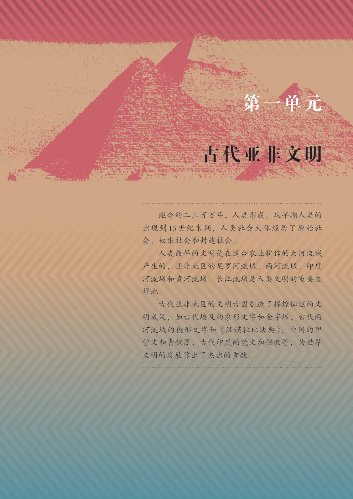
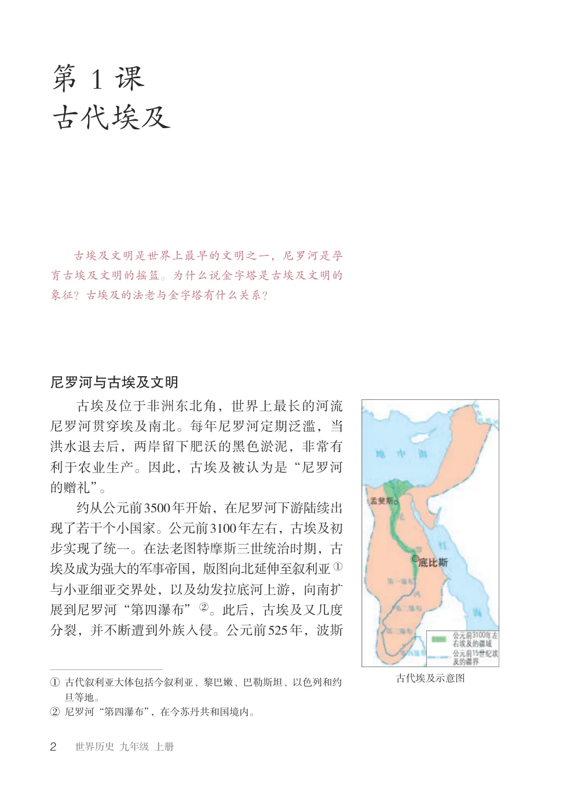
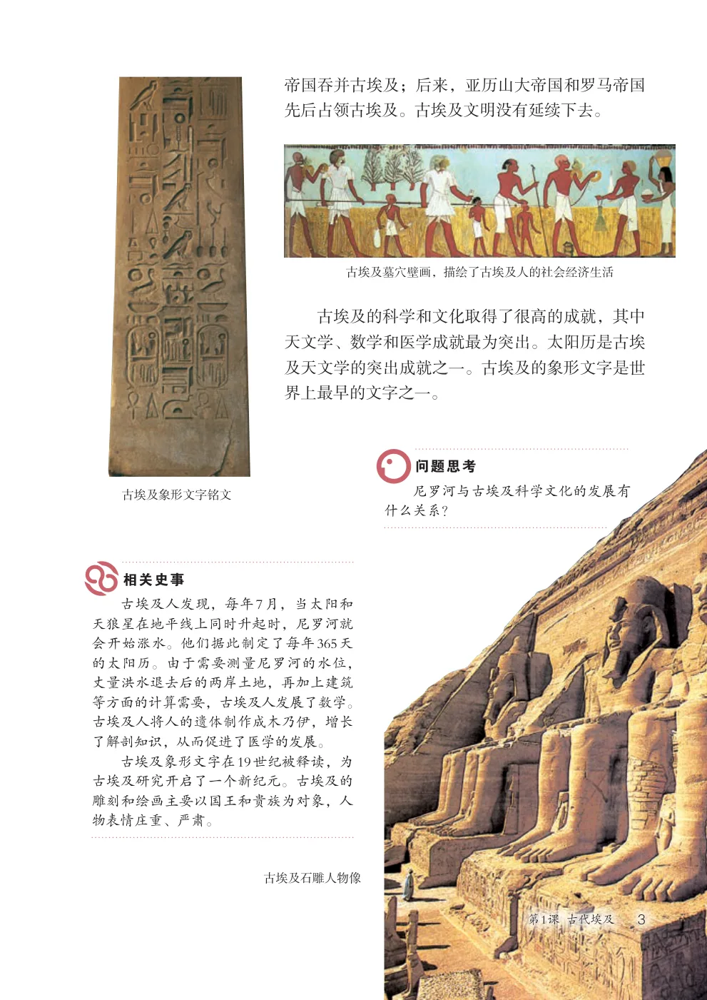
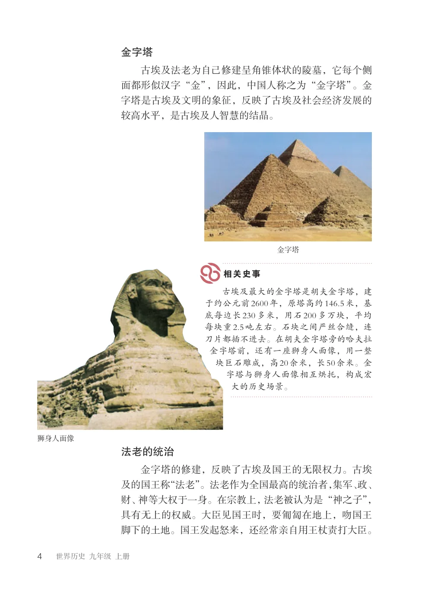
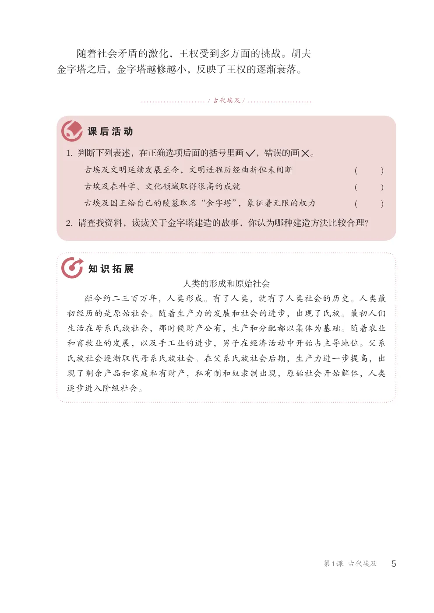
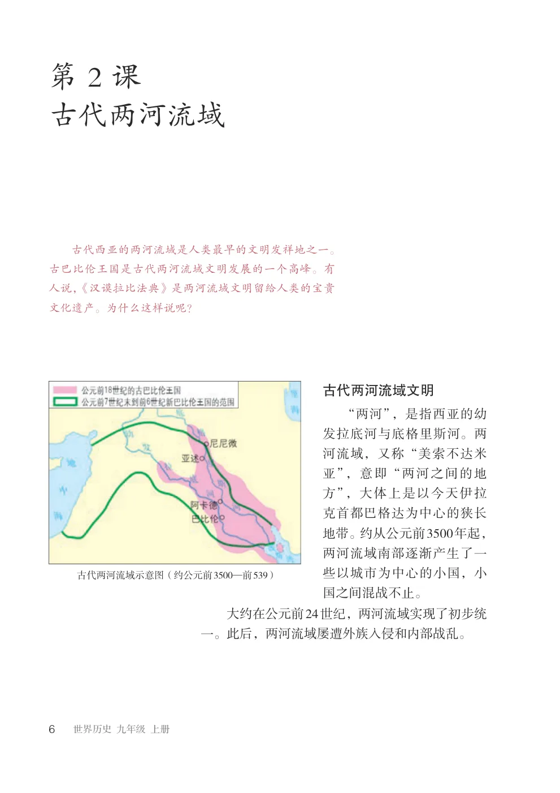
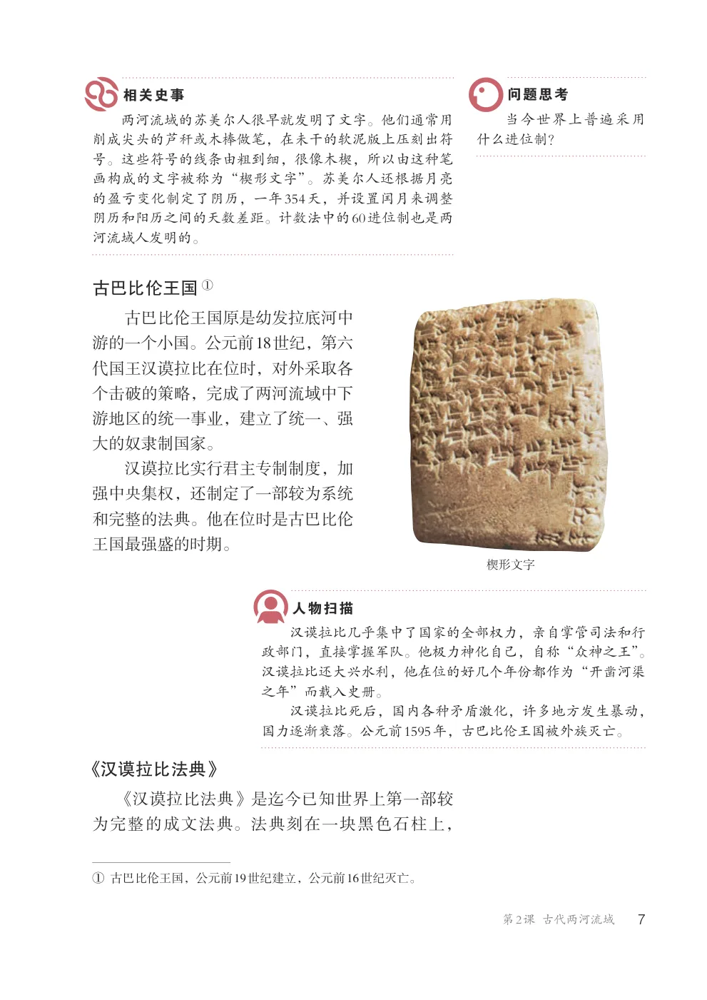
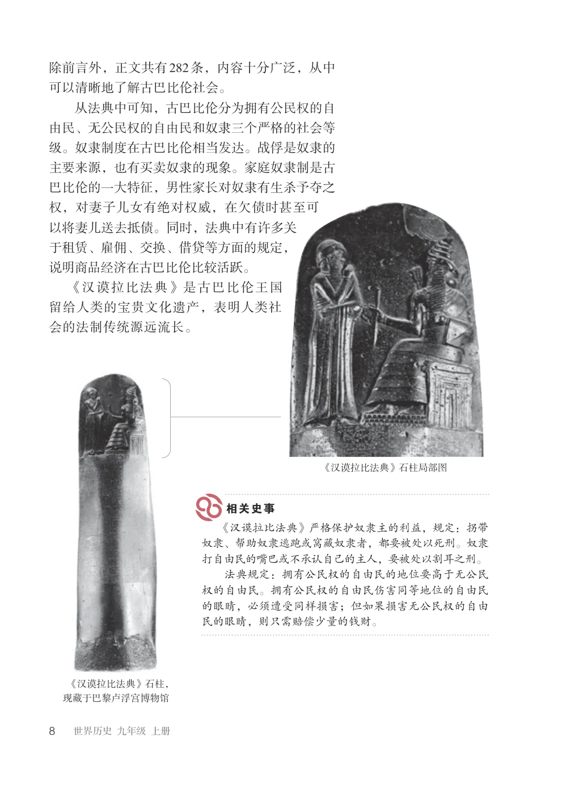
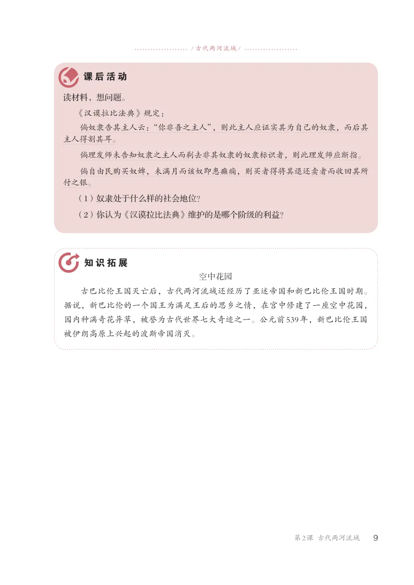
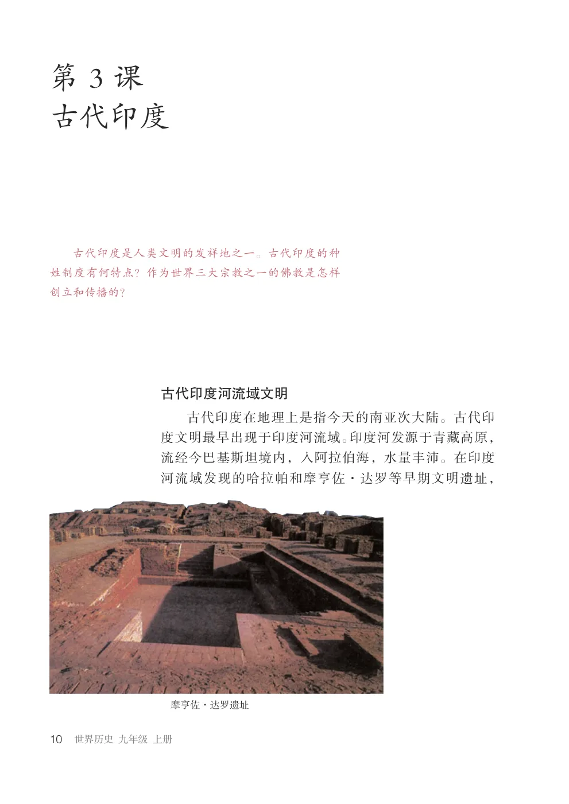
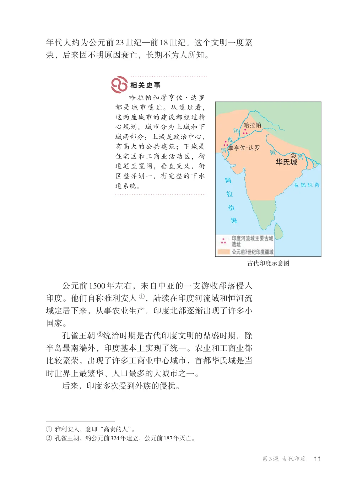
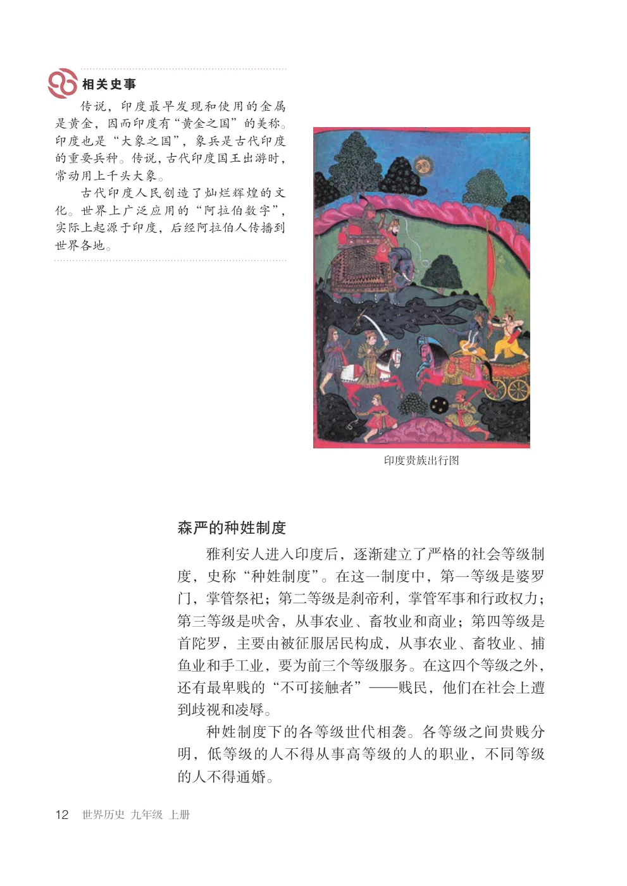
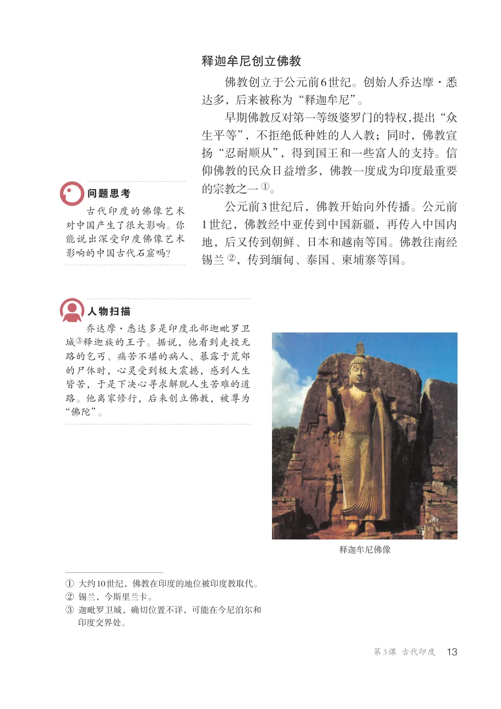
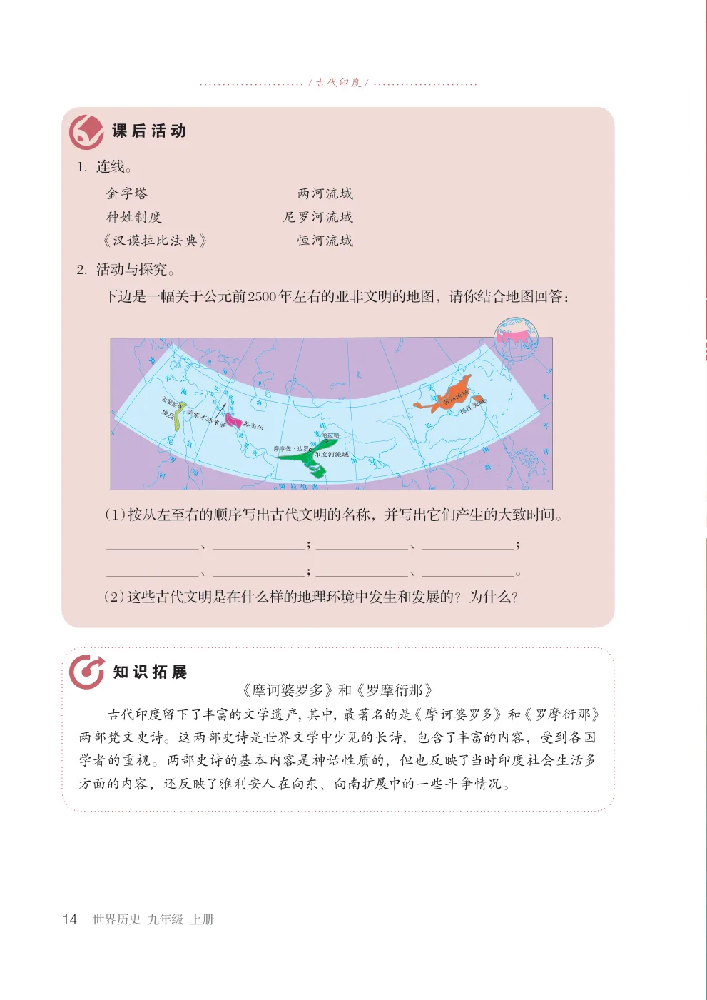